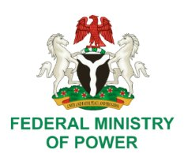
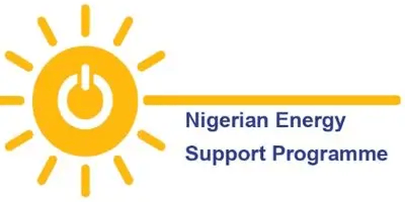
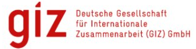

One national platform for electrification planning
Nigeria Electrification Atlas is Nigeria’s government-owned geospatial data platform for electrification planning, run by the Rural Electrification Agency, so that planners, developers and investors work from the same evidence.
Formerly Nigeria SE4ALL. Same data, new name, now run by REA. The platform is not affiliated with the global Sustainable Energy for All (SEforALL) initiative.
From Nigeria SE4ALL to Nigeria Electrification Atlas
Eight years of field data, now in the hands of the agency responsible for rural electrification.
2018–2023
NESP Phase II builds the evidence base
The medium-voltage (11 kV and 33 kV) grid is mapped across 22 states and 700 rural settlements are surveyed on site, published openly on the Nigeria SE4ALL platform.
2022
Version 3 of the platform
Relaunched as a geospatial data repository and dissemination channel for the energy sector, with interactive webmaps and open downloads.
NESP Phase III
National coverage completed
Medium-voltage grid mapping is completed in the remaining 14 states and the FCT, covering all 36 states and the FCT.
December 2026
New name, new owner
The platform launches as Nigeria Electrification Atlas and operational ownership passes to the Rural Electrification Agency, covering source code, hosting, datasets, domain name and technical documentation.
Why a new name
The platform was often confused with the global Sustainable Energy for All (SEforALL) initiative, although it has no institutional affiliation with it. A distinct name and visual identity make clear what the platform is and who runs it.
Why REA
To keep the value of the grid mapping, settlement surveys and platform development beyond NESP’s implementation period, the platform needs a long-term government owner. REA’s mandate in rural electrification, and its existing work with NESP and the Federal Ministry of Power, make it responsible for managing the platform, maintaining it and updating its data. The platform stays open to stakeholders across the energy sector.
What changes for existing users
The name and web address change. The data, webmaps and downloads stay the same.
REA becomes the contact for data questions, data requests and contributions.
Datasets continue to be published openly under a Creative Commons licence.
Request or share data
REA keeps the platform current with periodic data updates. Tell us what you need, or what you can contribute.
Nigeria’s 2030 targets for energy access, energy efficiency and renewable energy, set in the national energy Action Agenda. The platform tracks progress towards them.
Increase electricity access from the aggregate level of 40% (urban 65%, rural 28%) in 2015 to 75% (urban 90%, rural 60%) by 2020.
By 2030, reduce the share of the population living without electricity from 60% in 2015 to about 10%.
Replace 50% of traditional firewood consumption for cooking with improved cookstove technology by 2020 and 80% by 2030, working with the private sector to roll out LPG at affordable cost for Nigerians by 2020 and up to 2030.
By 2025 and 2030, nuclear energy is expected to contribute about 2.5% and 4% of the available electricity mix. Electricity generation will increase from the grid supply of 5,000 MW in 2015 to at least 32,000 MW by 2030.
ii
Energy efficiency
Efficient lighting, demand-side management and audits
By the end of 2015, efficient lighting (at least five times more efficient than incandescent lamps) will be used by 20% of households, 40% by 2020 and almost 100% by 2030.
For high-energy-consuming sectors (transport, power and industry), efficient energy technologies will be progressively introduced, along with demand-side management measures such as peak load management where possible. Compared with the 2015 level, energy efficiency will increase by at least 20% by 2020 and 50% by 2030.
By 2016, energy audits will be compulsory for all high-energy-consuming sectors and public buildings.
iii
Renewable energy
The 30:30:30 vision for the electricity mix
Nigeria’s electricity vision 30:30:30 is to achieve a technology-driven renewable energy sector that harnesses the nation’s resources to complement its fossil fuel consumption and guarantee energy security. Specifically, Nigeria’s renewable energy targets are:
By 2030, renewable energy is expected to contribute about 30% of the available electricity mix.
A 28% and 19% contribution of hydroelectricity (large and small hydro) to the generation mix by 2020 and 2030 respectively.
A 2% contribution of wind energy to the generation mix by 2020 and 2030.
A 20% and 19% contribution of solar energy (PV and solar thermal) to the generation mix by 2020 and 2030 respectively.
A 3% power generation capacity from biomass by 2020 and 2030.
10% biofuel blends by 2020 using locally produced renewable biofuel from secondary biomass.

Platform partner
Federal Ministry of Power (FMP)
The policy-making arm of the Federal Government responsible for the provision of power in Nigeria.
Our vision
To be a key enabler of community and economic growth by facilitating delivery of functional, affordable and reliable power infrastructure assets and associated services.
Our mission
Expedite national development by providing policies, systems and structures which ensure the delivery of reliable, functional and cost-effective power infrastructure assets and services that meet the needs of all.
Our mandate
Initiate and coordinate policies and strategies for the sustainable development of reliable, robust and affordable power supply.
Technical cooperation
Nigerian Energy Support Programme (NESP)
The Nigerian Energy Support Programme (NESP) is co-funded by the European Union and the German Federal Ministry for Economic Cooperation and Development (BMZ), and is jointly implemented by the Deutsche Gesellschaft für Internationale Zusammenarbeit (GIZ) GmbH in collaboration with the Federal Ministry of Power.
It aims to foster private investment in Nigeria’s renewable energy and energy efficiency sector and to improve access to electricity for disadvantaged rural communities. The programme takes a multi-level approach, combining advisory services on energy policy, economics and technical knowledge for a wide range of stakeholders. It is divided into three components:
COMPONENT 1Electrification planning and data management
COMPONENT 2Sustainable energy access (on-grid & off-grid)
COMPONENT 3Enabling environment for renewable energy and energy efficiency investments
Co-funded by the European Union and German Cooperation · implemented by GIZ


Nigerian Electricity Supply Industry
Stakeholders
The Nigerian Electricity Supply Industry (NESI) has many stakeholders. These are some of the key industry participants.
REA
Rural Electrification Agency (REA)
Mandated by the Federal Government to facilitate its goals of increasing access to electricity to 75% and 90% by 2020 and 2030 respectively, with at least 10% renewable energy in the mix by 2025. REA promotes rapid, safe, clean and cost-effective expansion of electricity access in unelectrified rural areas across Nigeria, helping improve the livelihoods and socio-economic conditions of rural dwellers.
Established by the Electric Power Sector Reform Act of 2005, NERC is an independent body mandated to carry out the technical and economic regulation of the Nigerian Electricity Supply Industry. It is charged with ensuring uninterrupted electricity, private-sector participation, fair regulation and consumer protection, fostering an investor-friendly industry and efficient market structure.
The principal body licensed to wheel power at high voltage and operate the National Grid and Market Operation Service. Its major activities include operating, expanding and upgrading transmission facilities and creating adequate network redundancies to ensure at least 99.9% reliability and reduce transmission losses to less than 5%.
A one-stop investment platform for renewable energy and energy efficiency investments in Nigeria, co-operated by the Federal Ministry of Power, the Nigerian Investment Promotion Commission (NIPC) and REA, and developed with the support of NESP. Find investment opportunities, case studies and market intelligence.